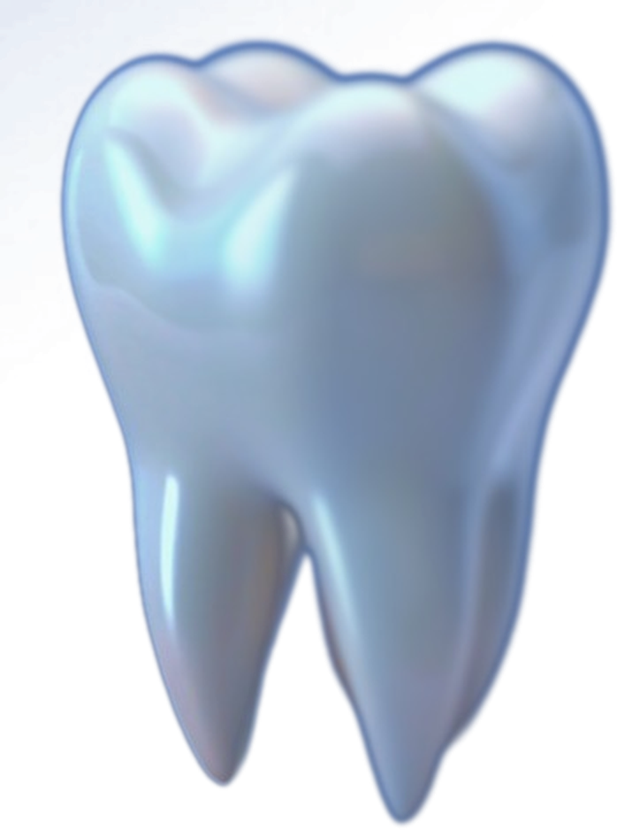

dos jovens de 12 anos nunca foram ao dentista
Challenge FIAP + Turma do Bem
Mais doadores Turmados, mais sorrisos transformados.
O Turma do Bem é uma plataforma que centraliza doadores, empresas e parceiros da Turma do Bem, organiza o funil de captação e usa dados e inteligência artificial para apoiar decisões.

Saúde bucal no Brasil
A falta de acesso ao dentista ainda é uma realidade para milhões de brasileiros.
de pessoas perderam todos os dentes
de adultos perderam 13 dentes ou mais
dos jovens de 15 a 19 anos têm cárie não tratada
Fonte: Pesquisa Nacional de Saúde (IBGE) - 2023, apresentada no kickoff da Turma do Bem.
O problema
As primeiras impressões iniciam um ciclo
Sem tratamento odontológico, jovens perdem oportunidades de emprego e o ciclo se repete.
-
Não vai ao dentista
Falta de acesso a atendimento odontológico.
-
Risco de mobilidade e perda
Problemas simples evoluem para perdas permanentes.
-
Portas se fecham
A aparência afeta a autoestima e entrevistas de emprego.
-
Não tem dinheiro
E, sem renda, volta a não ir ao dentista.
Quanto mais doadores e parceiros a Turma do Bem consegue manter, mais pessoas saem desse ciclo.
Nossa proposta
O que a plataforma oferece
Cadastro centralizado
Pessoas físicas, empresas, parceiros e apoiadores em um único lugar, com histórico completo.
Funil de captação
Acompanhe cada contato desde o primeiro interesse até a doação recorrente.
Dashboards
Indicadores claros de arrecadação, retenção e campanhas para a tomada de decisão.
Inteligência artificial
Qualificação e priorização automática das oportunidades com maior chance de conversão.
Automação
E-mails de agradecimento, lembretes e relatórios enviados sem trabalho manual.
Segurança e LGPD
Dados protegidos, com controle de acesso e consentimento dos doadores.
Veja a plataforma funcionando
Navegue pelo protótipo do painel de indicadores e da gestão de doadores.
Abrir protótipo